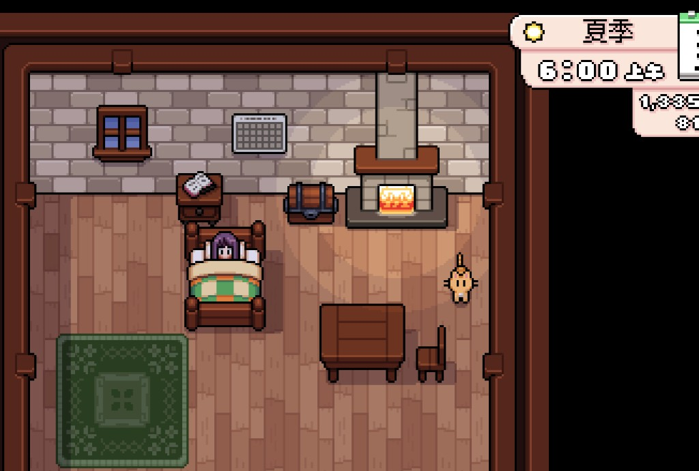
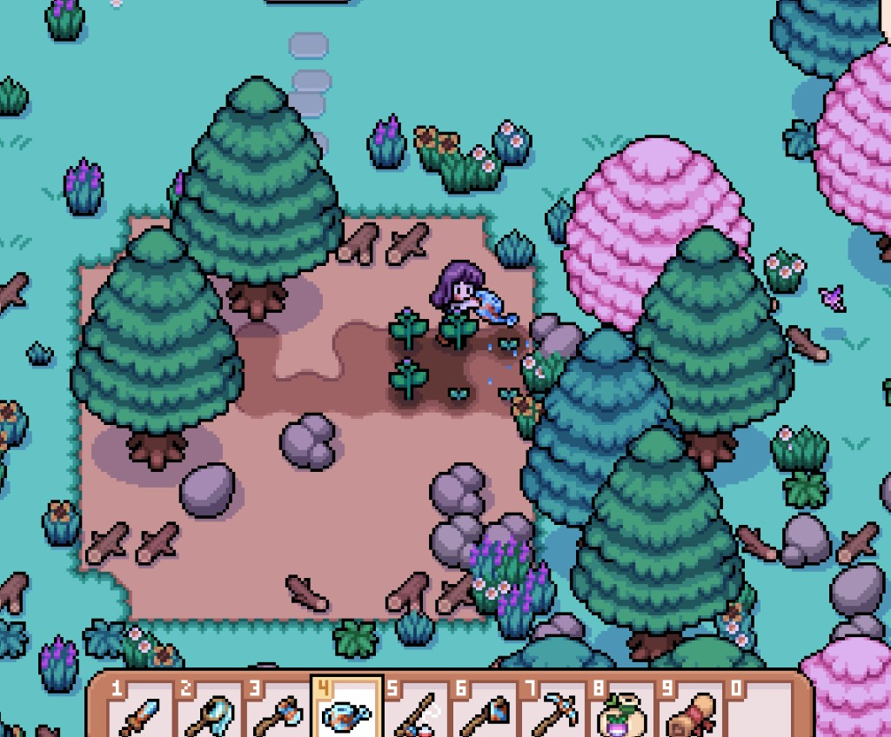

Quick answers
- Mail and weather first so you do not waste a walk.
- Water and harvest before town FOMO.
- Ship extras you will not eat or craft this week.
- Pick one afternoon job—not three.
- Sleep with enough energy for tomorrow’s can.
Suggested morning order
- Pet the farm animal / check the house.
- Read mail.
- Water and harvest.
- Chest tidy if inventory hurts.
- Ship extras.
- One outing with a stop rule.
Rainy mornings skip outdoor watering—use that gift for forage, fish, mines, or town errands.
When to stop the outing
Leave when the energy bar hits yellow, the clock gets late, or the one job is done. “One more floor” and “one more bush” are how mornings turn into exhausted evenings.
Safe to skip
- Talking to every villager before noon
- Redesigning the whole farm
- Accepting every board quest the same morning
Screenshots from our save
Real Fields of Mistria shots from our first-season play. Captions in English; in-game UI language may differ.




FAQ
Do I water on rainy days?
Outdoor crops usually do not need you—confirm in-game, then spend the morning elsewhere.
What if inventory is full?
Chest by the house first. See the inventory guide.
Unofficial fan guide. Not affiliated with NPC Studio. Verify details in your game version.